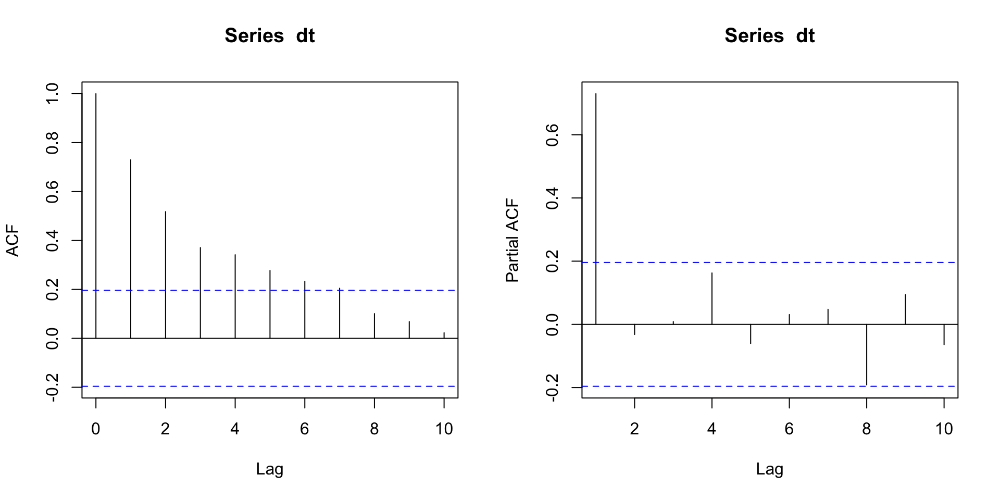
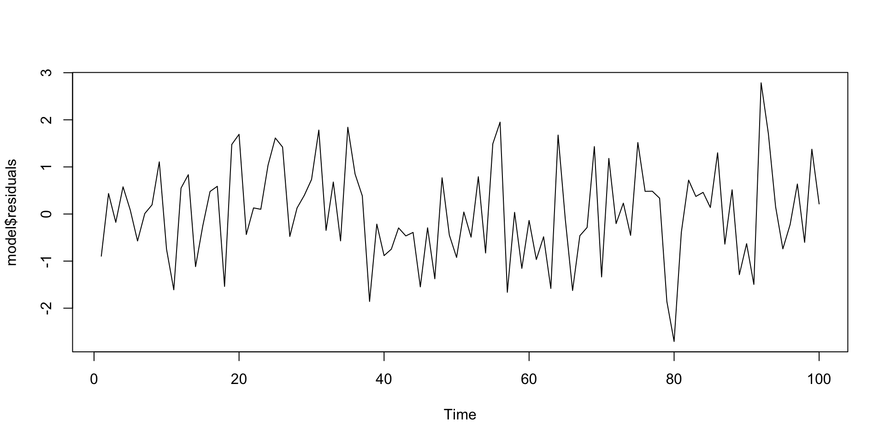
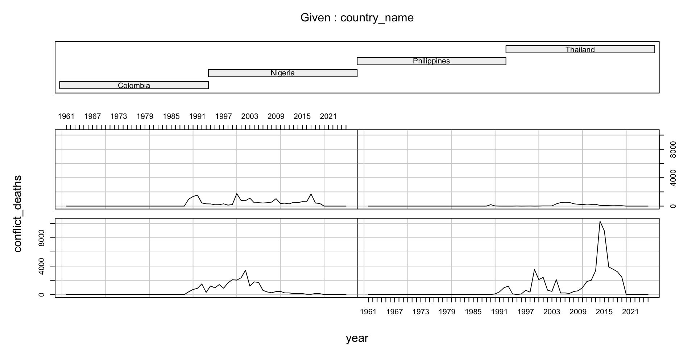
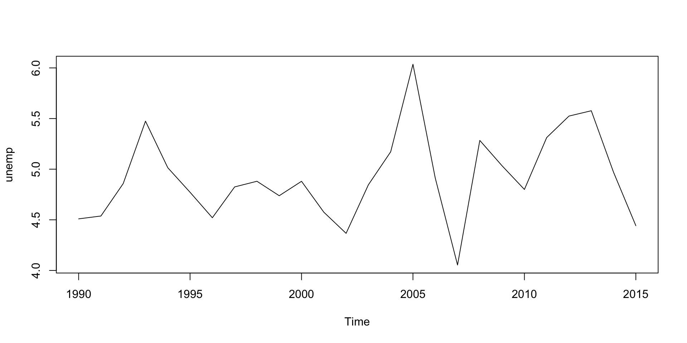
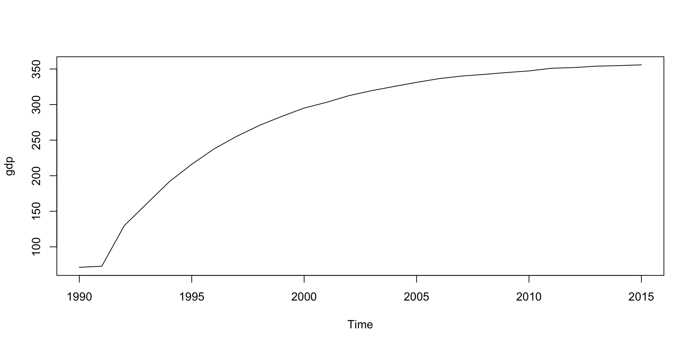
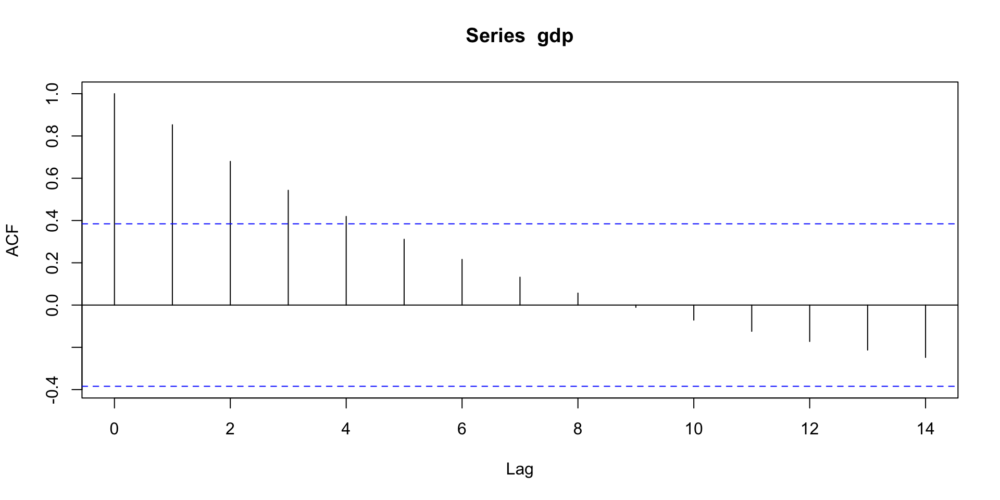
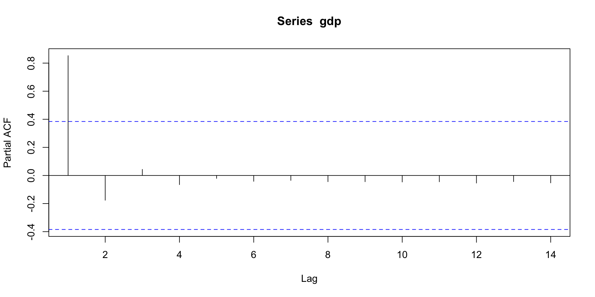
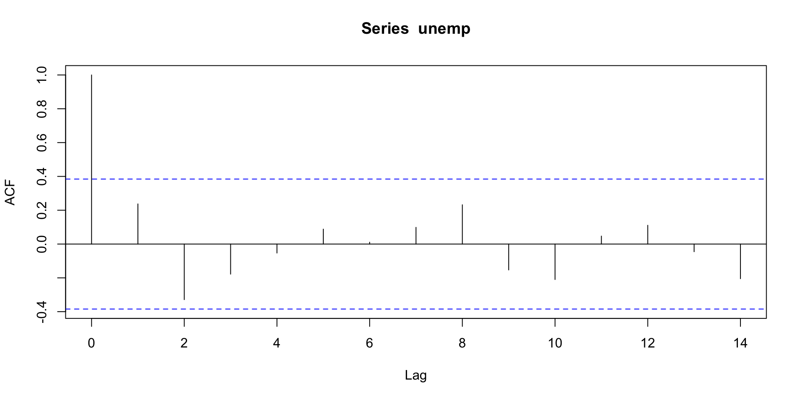
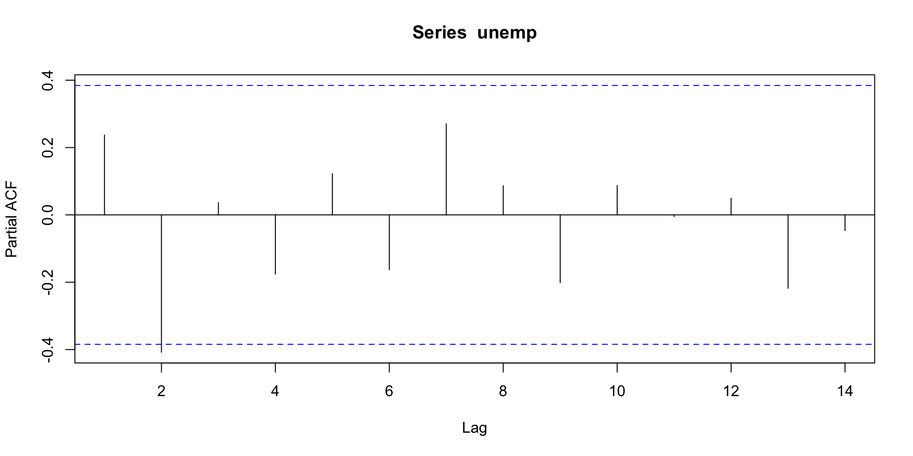
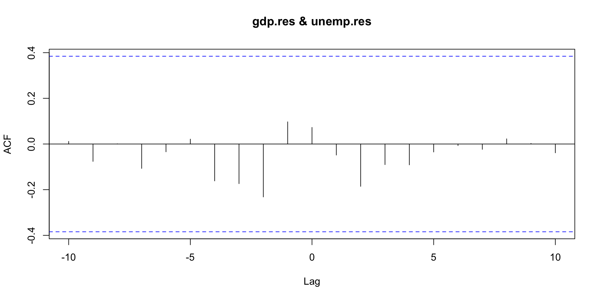

Session 6 - Time series
Today
Time series
Multi-level model
Exercises
Q&A research paper
Time series
what is a time series?
Repeated observations
Ordered by time
One observation per time unit
Stationary
Stationary means no trend in the time series

Stationary II
Dependence
Relationship between an observation at time t and an observation at time t-h
Different processes:
White Noise
Moving Average (MA)
Autoregression (AR)
Integration (example, Random Walk)
Identification

Estimation
arima(time series, order(p,d,q)):
time series: name of your time series object
order: specify the ARIMA elements
- p: order of the autoregression
- d: order of the integration
- q: order of the moving average
Estimation II
Diagnostic
Check that the residuals of your model are white noise
Box-Ljung test
data: model$residuals
X-squared = 16.535, df = 20, p-value = 0.683
Bivariate time series
Bivariate time series
Analysis of two time series
Evaluates the causality between the two variables:
Prewhitening
Granger causality
Error correction models of cointegration (see Jan Rovny notes)
Data
library(vdemdata)
data("vdem")
demo <- subset(vdem, country_name == "Türkiye" & year>1988 & year < 2020)
library(readr)
ucdp <- read_csv("https://ucdp.uu.se/downloads/ged/ged201.csv")
conf <- subset(ucdp, country == "Turkey")
conf_year <- aggregate(best ~ year, data = conf, FUN = sum)
df <- merge(demo, conf_year, by = "year", all.x = TRUE)
df$best[is.na(df$best)] <- 0 # no conflict = 0
#v2x_libdem = democracy
#best = conflict deathsPlotting time series

Plotting time series

Prewhitening
Start by doing the identification, estimation and diagnostic check.
Once this is done, you can check the cross-correlation of the residuals of the two time series
Identification
Augmented Dickey-Fuller Test
data: dem_index
Dickey-Fuller = -1.5275, Lag order = 3, p-value = 0.7547
alternative hypothesis: stationary

Estimation
Call:
arima(x = dem_index, order = c(1, 1, 0))
Coefficients:
ar1
0.5109
s.e. 0.1539
sigma^2 estimated as 0.0006066: log likelihood = 68.39, aic = -132.79
Call:
arima(x = conflict, order = c(1, 1, 0))
Coefficients:
ar1
0.1391
s.e. 0.1777
sigma^2 estimated as 394447: log likelihood = -235.86, aic = 475.71Diagnostic
Cross-correlation

Granger causality
grangertest(DV ~ IV, order=p, data):
DV: dependent variable
IV: independent variable
order = p: p is the number of lags you want to take into account in the regression
data: name of your dataset
Granger causality test
Model 1: best ~ Lags(best, 1:4) + Lags(v2x_libdem, 1:4)
Model 2: best ~ Lags(best, 1:4)
Res.Df Df F Pr(>F)
1 18
2 22 -4 0.621 0.6534Granger causality test
Model 1: v2x_libdem ~ Lags(v2x_libdem, 1:4) + Lags(best, 1:4)
Model 2: v2x_libdem ~ Lags(v2x_libdem, 1:4)
Res.Df Df F Pr(>F)
1 18
2 22 -4 1.3595 0.287TSCS
TSCS
Times series for more than one unit
Problems of bias estimation with OLS:
Unit effects
Standard errors estimation
Data
library(WDI)
library(vdemdata)
library(readr)
library(dplyr)
countries <- c("Turkey", "Nigeria", "Colombia", "Philippines", "Thailand") # example set
# --- Democracy (V-Dem) ---
data("vdem")
demo <- vdem %>%
filter(country_name %in% countries) %>%
select(country_name, year, v2x_libdem)
# --- Conflict (UCDP GED summary by country-year) ---
ucdp <- read_csv("https://ucdp.uu.se/downloads/ged/ged201.csv")
conf <- ucdp %>%
filter(country %in% countries) %>%
group_by(country, year) %>%
summarise(conflict_deaths = sum(best, na.rm = TRUE), .groups = "drop")
df <- demo %>%
left_join(conf, by = c("country_name" = "country", "year" = "year"))
df$conflict_deaths[is.na(df$conflict_deaths)] <- 0
df <- df %>%
filter(year > 1960)Unit effects
You need to check for unit effects before conducting your analysis.
You can do an ANOVA test.
If you have unit effects, you can use fixed or random effects
library(plm)
data<-pdata.frame(df,index=c("country_name","year"))
coplot(conflict_deaths~year|country_name, type="l",data=data)

Df Sum Sq Mean Sq F value Pr(>F)
country_name 3 22671546 7557182 6.915 0.000171 ***
Residuals 256 279775873 1092875
---
Signif. codes: 0 '***' 0.001 '**' 0.01 '*' 0.05 '.' 0.1 ' ' 1Fixed or Random effects
plm(formula, data, index=c("unit","time"), model):
formula: Y~X
data: name of the dataset
index= c(“unit”,“time”): specify the name of the unit and time variable
model: “within” for fixed effects estimator and “random” for random effects
Example fixed effects I
fe<-plm(conflict_deaths~v2x_libdem,
data=data,
index=c("country_name","year"),
model="within")
summary(fe)Oneway (individual) effect Within Model
Call:
plm(formula = conflict_deaths ~ v2x_libdem, data = data, model = "within",
index = c("country_name", "year"))
Balanced Panel: n = 4, T = 65, N = 260
Residuals:
Min. 1st Qu. Median 3rd Qu. Max.
-1309.36 -477.81 -147.86 314.24 8897.93
Coefficients:
Estimate Std. Error t-value Pr(>|t|)
v2x_libdem 3167.8 520.0 6.092 4.088e-09 ***
---
Signif. codes: 0 '***' 0.001 '**' 0.01 '*' 0.05 '.' 0.1 ' ' 1
Total Sum of Squares: 279780000
Residual Sum of Squares: 244230000
R-Squared: 0.12705
Adj. R-Squared: 0.11336
F-statistic: 37.1126 on 1 and 255 DF, p-value: 4.0883e-09Example fixed effects II
Call:
lm(formula = conflict_deaths ~ v2x_libdem + factor(country_name) -
1, data = data)
Residuals:
Min 1Q Median 3Q Max
-1309.4 -477.8 -147.9 314.2 8897.9
Coefficients:
Estimate Std. Error t value Pr(>|t|)
v2x_libdem 3167.8 520.0 6.092 4.09e-09 ***
factor(country_name)Colombia -795.2 234.4 -3.392 0.000805 ***
factor(country_name)Nigeria 203.8 164.2 1.241 0.215710
factor(country_name)Philippines -588.2 190.3 -3.091 0.002220 **
factor(country_name)Thailand -623.5 165.8 -3.760 0.000210 ***
---
Signif. codes: 0 '***' 0.001 '**' 0.01 '*' 0.05 '.' 0.1 ' ' 1
Residual standard error: 978.7 on 255 degrees of freedom
Multiple R-squared: 0.2981, Adjusted R-squared: 0.2844
F-statistic: 21.66 on 5 and 255 DF, p-value: < 2.2e-16Example random effects
re<-plm(conflict_deaths~v2x_libdem,
data=data,
index=c("country_name","year"),
model="random")
summary(re)Oneway (individual) effect Random Effect Model
(Swamy-Arora's transformation)
Call:
plm(formula = conflict_deaths ~ v2x_libdem, data = data, model = "random",
index = c("country_name", "year"))
Balanced Panel: n = 4, T = 65, N = 260
Effects:
var std.dev share
idiosyncratic 957767.3 978.7 0.858
individual 157999.9 397.5 0.142
theta: 0.7079
Residuals:
Min. 1st Qu. Median 3rd Qu. Max.
-1105.61 -376.33 -189.45 249.08 9105.92
Coefficients:
Estimate Std. Error z-value Pr(>|z|)
(Intercept) -421.65 251.07 -1.6794 0.09307 .
v2x_libdem 3061.62 512.63 5.9724 2.338e-09 ***
---
Signif. codes: 0 '***' 0.001 '**' 0.01 '*' 0.05 '.' 0.1 ' ' 1
Total Sum of Squares: 281710000
Residual Sum of Squares: 247490000
R-Squared: 0.12146
Adj. R-Squared: 0.11806
Chisq: 35.6693 on 1 DF, p-value: 2.3381e-09Comparing FE and RE
Should you choose fixed or random effects? You can do a Hausman test if you do not know which one to choose.
Panel Corrected Standard Errors
With TSCS, you also have a lot of problems with SE.
One solution proposed is to use Panel Corrected Standard Errors on OLS.
pcse(model, groupN, groupT):
model: name of the lm object
groupN: name of the unit variable
groupT: name of the time variable
Example
library(pcse)
ols<-lm(conflict_deaths~v2x_libdem,
data=data)
pcse<-pcse(ols,groupN=data$country_name,groupT=data$year)
summary(pcse)
Results:
Estimate PCSE t value Pr(>|t|)
(Intercept) -191.6081 153.4621 -1.248570 2.129543e-01
v2x_libdem 2223.2314 456.3394 4.871882 1.931036e-06
---------------------------------------------
# Valid Obs = 260; # Missing Obs = 0; Degrees of Freedom = 258.PCSE and LDV
Using PCSE only deals with the SE errors but does not take into account unit effects.
One solution is to add a lag dependent variable into the OLS which will capture the history of the dependent variable into the model and thus take into account some of the unit effects.
In R, you need to compute first the lagged dependent variable before the OLS and PCSE. You can use the lag() function.
PCSE and LDV II
data<-data %>%
group_by(country_name) %>%
mutate(l.conflict_death=dplyr::lag(conflict_deaths))
data2<-na.omit(data)
ols2<-lm(conflict_deaths~l.conflict_death+v2x_libdem,
data=data2)
pcse2<-pcse(ols2,groupN=data2$country_name,groupT=data2$year)
summary(pcse2)
Results:
Estimate PCSE t value Pr(>|t|)
(Intercept) -29.9827658 102.12598915 -0.2935861 7.693149e-01
l.conflict_death 0.7639128 0.06693568 11.4126401 1.304803e-24
v2x_libdem 473.0538386 306.94742198 1.5411559 1.245286e-01
---------------------------------------------
# Valid Obs = 256; # Missing Obs = 0; Degrees of Freedom = 253.Multi-level model
Data with nested observations in larger unit
Incorporate information at the larger unit into the regression
(1|variable) to incorporate the effect
# I am simulating data, so a seed will guarantee the same simulated data every time
set.seed(1312)
data <- tibble(
region = rep(1:10, each = 100),
# 10 regions, 100 individuals each
individual_income = rnorm(1000, mean = 50000, sd = 10000),
# some control variables
education_level = rnorm(1000, mean = 16, sd = 2),
gender = sample(c("Male", "Female"), 1000, replace = TRUE),
# a random and fun control variable
number_of_pets = rpois(1000, lambda = 2)
) |>
mutate(
individual_income = scale(individual_income),
education_level = scale(education_level),
# cheating myself to significant results for regional variable
regional_effect = rnorm(10, mean = 0, sd = 2)[region] # greater SD for more variability
) |>
mutate(voted = as.integer(
runif(1000) < plogis(
0.5 + 0.25 * individual_income + 0.15 * education_level +
0.2 * (gender == "Female") + 0.1 * number_of_pets +
regional_effect
)
)
)# Fit a logistic mixed model
library(lme4)
model <-
glmer(
voted ~ individual_income + education_level + gender + number_of_pets +
(1 | region),
family = binomial,
data = data
)
summary(model)Generalized linear mixed model fit by maximum likelihood (Laplace
Approximation) [glmerMod]
Family: binomial ( logit )
Formula:
voted ~ individual_income + education_level + gender + number_of_pets +
(1 | region)
Data: data
AIC BIC logLik -2*log(L) df.resid
802.3 831.7 -395.1 790.3 994
Scaled residuals:
Min 1Q Median 3Q Max
-8.8493 -0.1220 0.2806 0.4598 6.0004
Random effects:
Groups Name Variance Std.Dev.
region (Intercept) 4.77 2.184
Number of obs: 1000, groups: region, 10
Fixed effects:
Estimate Std. Error z value Pr(>|z|)
(Intercept) 1.284278 0.722539 1.777 0.07549 .
individual_income 0.175018 0.088603 1.975 0.04823 *
education_level 0.321368 0.089695 3.583 0.00034 ***
genderMale -0.016058 0.183702 -0.087 0.93034
number_of_pets -0.002859 0.065669 -0.044 0.96528
---
Signif. codes: 0 '***' 0.001 '**' 0.01 '*' 0.05 '.' 0.1 ' ' 1
Correlation of Fixed Effects:
(Intr) indvd_ edctn_ gndrMl
indivdl_ncm 0.019
educatn_lvl 0.016 0.003
genderMale -0.143 -0.043 0.050
numbr_f_pts -0.189 -0.016 -0.044 0.071Q&A
Exercises
Exercise 1
In this exercise, we are interested in the relationship between GDP and unemployment (simulated dataset). You can find the dataset here https://github.com/scpo-quantimethods/quantitative_methods_two/raw/main/exercices/exercices6/data/panel.Rdata
- Download the data.
- Create a new dataset where you only keep the observations from Japan.
- Plot the time series of unemployment and GDP


- Are the two times series stationary?
Augmented Dickey-Fuller Test
data: gdp
Dickey-Fuller = -4.352, Lag order = 2, p-value = 0.01098
alternative hypothesis: stationary
Augmented Dickey-Fuller Test
data: unemp
Dickey-Fuller = -3.3469, Lag order = 2, p-value = 0.08515
alternative hypothesis: stationary
Augmented Dickey-Fuller Test
data: unemp_diff
Dickey-Fuller = -3.8328, Lag order = 2, p-value = 0.03337
alternative hypothesis: stationary- Identify, estimate and diagnose the GDP time series.


Series: gdp
ARIMA(1,2,0)
Coefficients:
ar1
-0.9404
s.e. 0.0830
sigma^2 = 84.35: log likelihood = -87.84
AIC=179.68 AICc=180.26 BIC=182.04
Call:
arima(x = gdp, order = c(1, 0, 0))
Coefficients:
ar1 intercept
0.9921 219.8255
s.e. 0.0109 130.7159
sigma^2 estimated as 296.4: log likelihood = -112.96, aic = 231.92- Identify, estimate and diagnose the democratization time series.


Series: unemp
ARIMA(0,0,1) with non-zero mean
Coefficients:
ma1 mean
0.7101 4.9018
s.e. 0.1860 0.1246
sigma^2 = 0.154: log likelihood = -11.88
AIC=29.76 AICc=30.85 BIC=33.54
Call:
arima(x = unemp, order = c(0, 0, 1))
Coefficients:
ma1 intercept
0.7101 4.9018
s.e. 0.1860 0.1246
sigma^2 estimated as 0.1421: log likelihood = -11.88, aic = 29.76- Does unemployment decrease GDP ? Check with the prewhitening technique.
Augmented Dickey-Fuller Test
data: unemp.res
Dickey-Fuller = -3.6322, Lag order = 2, p-value = 0.0477
alternative hypothesis: stationary
Augmented Dickey-Fuller Test
data: gdp.res
Dickey-Fuller = -4.5539, Lag order = 2, p-value = 0.01
alternative hypothesis: stationary
- Does unemployment decreases GDP? Check with the Granger causality technique.
Granger causality test
Model 1: gdp ~ Lags(gdp, 1:5) + Lags(unemp, 1:5)
Model 2: gdp ~ Lags(gdp, 1:5)
Res.Df Df F Pr(>F)
1 10
2 15 -5 1.506 0.2716Granger causality test
Model 1: unemp ~ Lags(unemp, 1:5) + Lags(gdp, 1:5)
Model 2: unemp ~ Lags(unemp, 1:5)
Res.Df Df F Pr(>F)
1 10
2 15 -5 3.5825 0.04075 *
---
Signif. codes: 0 '***' 0.001 '**' 0.01 '*' 0.05 '.' 0.1 ' ' 1- Now, we are interested in doing a TSCS analysis, so we will use the whole data set again. Run a TSCS analysis with fixed effects. Use the fixed effects estimator
- Run a TSCS analysis with random effects.
- Run a Hausman test. Is it better to use fixed or random effects in this case?
Hausman Test
data: gdp ~ unemp
chisq = 0.77017, df = 1, p-value = 0.3802
alternative hypothesis: one model is inconsistent- Run a PCSE with lagged dependent variable model.
library(tidyverse)
library(pcse)
panel <- panel %>%
group_by(country) %>%
mutate(l.gdp = dplyr::lag(gdp))
panel2<-na.omit(panel)
panel2$country <- as.factor(panel2$country)
panel2$year <- as.numeric(as.character(panel2$year))
ols<-lm(gdp~l.gdp+unemp,data=panel2)
pcse<-pcse(ols, groupN=panel2$country, groupT=panel2$year)
summary(pcse)
Results:
Estimate PCSE t value Pr(>|t|)
(Intercept) 40.5283524 6.23643015 6.498646 4.439796e-10
l.gdp 0.9151005 0.01754148 52.167806 2.311892e-135
unemp 2.0386557 0.46079341 4.424229 1.452384e-05
---------------------------------------------
# Valid Obs = 250; # Missing Obs = 0; Degrees of Freedom = 247.Exercise 2
In this exercise, we are using the data from Abou-Chadi (2016) article. You can download the data on the supplementary materials page of the paper. The example is inspired by Luis Sattelmayer. We are interested in understanding the effect of increasing radical right votes on mainstream parties’ shift to anti-immigrant positions.
- Download the data and import it into R. Select the variable countryname, cultposition, sumright, rileright, limmig, govparty pervote, partyname, date
- Run a TSCS analysis with fixed effects. Use the fixed effects estimator
library(plm)
fixed_effects <-
plm(
cultposition ~ sumright ,
data = data,
index = c("partyname", "date"),
model = "within"
)
summary(fixed_effects)Oneway (individual) effect Within Model
Call:
plm(formula = cultposition ~ sumright, data = data, model = "within",
index = c("partyname", "date"))
Unbalanced Panel: n = 94, T = 1-10, N = 304
Residuals:
Min. 1st Qu. Median 3rd Qu. Max.
-1.68108 -0.27092 0.00000 0.20033 1.66977
Coefficients:
Estimate Std. Error t-value Pr(>|t|)
sumright 0.0410911 0.0094378 4.3539 2.094e-05 ***
---
Signif. codes: 0 '***' 0.001 '**' 0.01 '*' 0.05 '.' 0.1 ' ' 1
Total Sum of Squares: 84.478
Residual Sum of Squares: 77.453
R-Squared: 0.083158
Adj. R-Squared: -0.3292
F-statistic: 18.9563 on 1 and 209 DF, p-value: 2.0935e-05- Run a TSCS analysis with fixed effects. Use the dummy variable estimator
Call:
lm(formula = cultposition ~ sumright + factor(partyname) - 1,
data = data)
Residuals:
Min 1Q Median 3Q Max
-1.6811 -0.2709 0.0000 0.2003 1.6698
Coefficients:
Estimate
sumright 0.041091
factor(partyname)?ûVP People's Party -1.272122
factor(partyname).tio.l Coalition -0.968473
factor(partyname)AP Popular Alliance -0.888889
factor(partyname)CD Centre Democrats -0.692951
factor(partyname)CDA Christian Democratic Appeal -0.924696
factor(partyname)cdH Humanist Democratic Centre -1.464070
factor(partyname)CDS Centre Social Democrats -1.000000
factor(partyname)CDS-PP Democratic and Social Center 1.000000
factor(partyname)CDU/CSU Christian Democratic Union/Social Union -0.130217
factor(partyname)Christian Democratic and Flemish 0.071077
factor(partyname)Christian Democrats -0.399079
factor(partyname)Christian Democrats in Finland -0.245396
factor(partyname)Christian People's Party -1.908113
factor(partyname)Christian Union -0.778869
factor(partyname)CiU Convergence and Unity -0.714583
factor(partyname)Conservative Party -0.545612
factor(partyname)Convergence and Union -0.588235
factor(partyname)CU Christian Union -0.484393
factor(partyname)CVP Christian People's Party -0.831856
factor(partyname)CVP/PDC Christian Democratic People's Party -1.084095
factor(partyname)D. Labour Party -1.162013
factor(partyname)D'66 Democrats 66 -0.644146
factor(partyname)DC Christan Democrats -1.261298
factor(partyname)Democrats'66 -0.242026
factor(partyname)EVP/PEP Protestant People's Party -2.053247
factor(partyname)Familiy of the Irish -1.000000
factor(partyname)FDP Free Democratic Party -0.875024
factor(partyname)FDP/PRD Radical Democratic Party -1.208694
factor(partyname)FI Forza Italy 0.344597
factor(partyname)FI Go Italy -0.909595
factor(partyname)Fian. Fail -1.000000
factor(partyname)Fine Gael -1.000000
factor(partyname)Finnish Social Democrats -1.168473
factor(partyname)FP Liberal People's Party -1.088346
factor(partyname)FP People's Party -1.000000
factor(partyname)H Conservative Party -0.970976
factor(partyname)KdS Christian Democratic Community -1.119164
factor(partyname)KF Conservative People's Party 0.216896
factor(partyname)KrF Christian People's Party -0.817208
factor(partyname)Labour Party -0.734848
factor(partyname)LDP Liberal Democratic Party -1.000000
factor(partyname)Liberal Party -0.227028
factor(partyname)Liberals 0.121142
factor(partyname)LP Labour Party -0.962963
factor(partyname)LPS Liberal Party -1.773406
factor(partyname)Moderate Coalition Party (Alliance Jobmanifesto) -1.119164
factor(partyname)Moderate Coalition Party (The Alliance Manifest) -0.489626
factor(partyname)MSP Moderate Coalition Party -1.000000
factor(partyname)ND New Democracy 1.000000
factor(partyname)Norwegian Labour Party -1.809752
factor(partyname)Open Flemish Liberals and Democrats -0.629369
factor(partyname)OVP: People's Party 0.221256
factor(partyname)Partido Socialista Obrero Espa -1.000000
factor(partyname)PASOK Panhellenic Socialist Movement -1.000000
factor(partyname)PCS/CSV Christian Social People's Party 0.059019
factor(partyname)PD Progressive Democrats -1.000000
factor(partyname)PD/DP Democratic Party -0.333333
factor(partyname)Popular Party 0.666667
factor(partyname)POSL/LSAP Socialist Workers' Party -0.554151
factor(partyname)PP Popular Party -0.254724
factor(partyname)PR Radical Party -1.247820
factor(partyname)PS Francophone Socialist Party -0.832507
factor(partyname)PS Socialist Party -1.151904
factor(partyname)PSC Christian Social Party -1.087978
factor(partyname)PSD Social Democratic Party -0.200000
factor(partyname)PSI Socialist Party -1.409699
factor(partyname)PSOE Socialist Workers' Party -0.765306
factor(partyname)PSP Socialist Party 0.134000
factor(partyname)PvdA Labour Party -0.582130
factor(partyname)PVV Party of Liberty and Progress 0.406318
factor(partyname)Radical Party -1.571166
factor(partyname)RV Radical Party -1.259818
factor(partyname)SD Social Democratic Party -0.356972
factor(partyname)SdaP Social Democratic Labour Party -0.699816
factor(partyname)Social Democratic Party -0.285583
factor(partyname)Socialist Party Different -1.479944
factor(partyname)SP Flemish Socialist Party -0.516193
factor(partyname)SP?û Social Democratic Party -1.729736
factor(partyname)Spanish Socialist Workers' Party -1.000000
factor(partyname)SPD Social Democratic Party -0.660764
factor(partyname)SPO: Social Democratic Party -0.628713
factor(partyname)SPOE Social Democratic Party -0.464635
factor(partyname)SPS/PSS Social Democratic Party -0.973627
factor(partyname)SSDP Social Democrats -1.053418
factor(partyname)The .tio.l Coalition Party -0.665746
factor(partyname)The Finnish Social Democratic Party -0.065746
factor(partyname)UDF Union for French Democracy -0.677838
factor(partyname)Ulivo Olive Tree -2.057725
factor(partyname)UMP Union for a Popular Movement -0.408772
factor(partyname)UMP Union for the Presidential Majority -1.613572
factor(partyname)V Liberal Party -1.146030
factor(partyname)V Liberals 0.366010
factor(partyname)VLD Flemish Liberals and Democrats 0.537522
factor(partyname)VVD People's Party for Freedom and Democracy -0.129686
Std. Error
sumright 0.009438
factor(partyname)?ûVP People's Party 0.352273
factor(partyname).tio.l Coalition 0.609987
factor(partyname)AP Popular Alliance 0.430457
factor(partyname)CD Centre Democrats 0.434719
factor(partyname)CDA Christian Democratic Appeal 0.194861
factor(partyname)cdH Humanist Democratic Centre 0.444712
factor(partyname)CDS Centre Social Democrats 0.608759
factor(partyname)CDS-PP Democratic and Social Center 0.608759
factor(partyname)CDU/CSU Christian Democratic Union/Social Union 0.304687
factor(partyname)Christian Democratic and Flemish 0.618659
factor(partyname)Christian Democrats 0.608946
factor(partyname)Christian Democrats in Finland 0.609987
factor(partyname)Christian People's Party 0.643499
factor(partyname)Christian Union 0.611291
factor(partyname)CiU Convergence and Unity 0.215229
factor(partyname)Conservative Party 0.275423
factor(partyname)Convergence and Union 0.608759
factor(partyname)CU Christian Union 0.358655
factor(partyname)CVP Christian People's Party 0.233631
factor(partyname)CVP/PDC Christian Democratic People's Party 0.316988
factor(partyname)D. Labour Party 0.258268
factor(partyname)D'66 Democrats 66 0.204758
factor(partyname)DC Christan Democrats 0.434621
factor(partyname)Democrats'66 0.611291
factor(partyname)EVP/PEP Protestant People's Party 0.655063
factor(partyname)Familiy of the Irish 0.608759
factor(partyname)FDP Free Democratic Party 0.248867
factor(partyname)FDP/PRD Radical Democratic Party 0.316988
factor(partyname)FI Forza Italy 0.627094
factor(partyname)FI Go Italy 0.622981
factor(partyname)Fian. Fail 0.304379
factor(partyname)Fine Gael 0.351467
factor(partyname)Finnish Social Democrats 0.609987
factor(partyname)FP Liberal People's Party 0.430935
factor(partyname)FP People's Party 0.608759
factor(partyname)H Conservative Party 0.258268
factor(partyname)KdS Christian Democratic Community 0.609374
factor(partyname)KF Conservative People's Party 0.264153
factor(partyname)KrF Christian People's Party 0.215821
factor(partyname)Labour Party 0.248525
factor(partyname)LDP Liberal Democratic Party 0.430457
factor(partyname)Liberal Party 0.308813
factor(partyname)Liberals 0.622733
factor(partyname)LP Labour Party 0.351467
factor(partyname)LPS Liberal Party 0.352422
factor(partyname)Moderate Coalition Party (Alliance Jobmanifesto) 0.609374
factor(partyname)Moderate Coalition Party (The Alliance Manifest) 0.608902
factor(partyname)MSP Moderate Coalition Party 0.608759
factor(partyname)ND New Democracy 0.608759
factor(partyname)Norwegian Labour Party 0.643499
factor(partyname)Open Flemish Liberals and Democrats 0.618659
factor(partyname)OVP: People's Party 0.446531
factor(partyname)Partido Socialista Obrero Espa 0.608759
factor(partyname)PASOK Panhellenic Socialist Movement 0.272245
factor(partyname)PCS/CSV Christian Social People's Party 0.272245
factor(partyname)PD Progressive Democrats 0.304379
factor(partyname)PD/DP Democratic Party 0.272245
factor(partyname)Popular Party 0.608759
factor(partyname)POSL/LSAP Socialist Workers' Party 0.272245
factor(partyname)PP Popular Party 0.230089
factor(partyname)PR Radical Party 0.434204
factor(partyname)PS Francophone Socialist Party 0.235159
factor(partyname)PS Socialist Party 0.283990
factor(partyname)PSC Christian Social Party 0.252577
factor(partyname)PSD Social Democratic Party 0.272245
factor(partyname)PSI Socialist Party 0.440623
factor(partyname)PSOE Socialist Workers' Party 0.230089
factor(partyname)PSP Socialist Party 0.272245
factor(partyname)PvdA Labour Party 0.194861
factor(partyname)PVV Party of Liberty and Progress 0.351740
factor(partyname)Radical Party 0.622733
factor(partyname)RV Radical Party 0.319753
factor(partyname)SD Social Democratic Party 0.261413
factor(partyname)SdaP Social Democratic Labour Party 0.430508
factor(partyname)Social Democratic Party 0.435426
factor(partyname)Socialist Party Different 0.618659
factor(partyname)SP Flemish Socialist Party 0.273242
factor(partyname)SP?û Social Democratic Party 0.389385
factor(partyname)Spanish Socialist Workers' Party 0.608759
factor(partyname)SPD Social Democratic Party 0.272717
factor(partyname)SPO: Social Democratic Party 0.616046
factor(partyname)SPOE Social Democratic Party 0.625325
factor(partyname)SPS/PSS Social Democratic Party 0.480134
factor(partyname)SSDP Social Democrats 0.608882
factor(partyname)The .tio.l Coalition Party 0.608946
factor(partyname)The Finnish Social Democratic Party 0.608946
factor(partyname)UDF Union for French Democracy 0.457746
factor(partyname)Ulivo Olive Tree 0.655443
factor(partyname)UMP Union for a Popular Movement 0.632170
factor(partyname)UMP Union for the Presidential Majority 0.624858
factor(partyname)V Liberal Party 0.258268
factor(partyname)V Liberals 0.285247
factor(partyname)VLD Flemish Liberals and Democrats 0.359671
factor(partyname)VVD People's Party for Freedom and Democracy 0.218514
t value
sumright 4.354
factor(partyname)?ûVP People's Party -3.611
factor(partyname).tio.l Coalition -1.588
factor(partyname)AP Popular Alliance -2.065
factor(partyname)CD Centre Democrats -1.594
factor(partyname)CDA Christian Democratic Appeal -4.745
factor(partyname)cdH Humanist Democratic Centre -3.292
factor(partyname)CDS Centre Social Democrats -1.643
factor(partyname)CDS-PP Democratic and Social Center 1.643
factor(partyname)CDU/CSU Christian Democratic Union/Social Union -0.427
factor(partyname)Christian Democratic and Flemish 0.115
factor(partyname)Christian Democrats -0.655
factor(partyname)Christian Democrats in Finland -0.402
factor(partyname)Christian People's Party -2.965
factor(partyname)Christian Union -1.274
factor(partyname)CiU Convergence and Unity -3.320
factor(partyname)Conservative Party -1.981
factor(partyname)Convergence and Union -0.966
factor(partyname)CU Christian Union -1.351
factor(partyname)CVP Christian People's Party -3.561
factor(partyname)CVP/PDC Christian Democratic People's Party -3.420
factor(partyname)D. Labour Party -4.499
factor(partyname)D'66 Democrats 66 -3.146
factor(partyname)DC Christan Democrats -2.902
factor(partyname)Democrats'66 -0.396
factor(partyname)EVP/PEP Protestant People's Party -3.134
factor(partyname)Familiy of the Irish -1.643
factor(partyname)FDP Free Democratic Party -3.516
factor(partyname)FDP/PRD Radical Democratic Party -3.813
factor(partyname)FI Forza Italy 0.550
factor(partyname)FI Go Italy -1.460
factor(partyname)Fian. Fail -3.285
factor(partyname)Fine Gael -2.845
factor(partyname)Finnish Social Democrats -1.916
factor(partyname)FP Liberal People's Party -2.526
factor(partyname)FP People's Party -1.643
factor(partyname)H Conservative Party -3.760
factor(partyname)KdS Christian Democratic Community -1.837
factor(partyname)KF Conservative People's Party 0.821
factor(partyname)KrF Christian People's Party -3.787
factor(partyname)Labour Party -2.957
factor(partyname)LDP Liberal Democratic Party -2.323
factor(partyname)Liberal Party -0.735
factor(partyname)Liberals 0.195
factor(partyname)LP Labour Party -2.740
factor(partyname)LPS Liberal Party -5.032
factor(partyname)Moderate Coalition Party (Alliance Jobmanifesto) -1.837
factor(partyname)Moderate Coalition Party (The Alliance Manifest) -0.804
factor(partyname)MSP Moderate Coalition Party -1.643
factor(partyname)ND New Democracy 1.643
factor(partyname)Norwegian Labour Party -2.812
factor(partyname)Open Flemish Liberals and Democrats -1.017
factor(partyname)OVP: People's Party 0.496
factor(partyname)Partido Socialista Obrero Espa -1.643
factor(partyname)PASOK Panhellenic Socialist Movement -3.673
factor(partyname)PCS/CSV Christian Social People's Party 0.217
factor(partyname)PD Progressive Democrats -3.285
factor(partyname)PD/DP Democratic Party -1.224
factor(partyname)Popular Party 1.095
factor(partyname)POSL/LSAP Socialist Workers' Party -2.035
factor(partyname)PP Popular Party -1.107
factor(partyname)PR Radical Party -2.874
factor(partyname)PS Francophone Socialist Party -3.540
factor(partyname)PS Socialist Party -4.056
factor(partyname)PSC Christian Social Party -4.308
factor(partyname)PSD Social Democratic Party -0.735
factor(partyname)PSI Socialist Party -3.199
factor(partyname)PSOE Socialist Workers' Party -3.326
factor(partyname)PSP Socialist Party 0.492
factor(partyname)PvdA Labour Party -2.987
factor(partyname)PVV Party of Liberty and Progress 1.155
factor(partyname)Radical Party -2.523
factor(partyname)RV Radical Party -3.940
factor(partyname)SD Social Democratic Party -1.366
factor(partyname)SdaP Social Democratic Labour Party -1.626
factor(partyname)Social Democratic Party -0.656
factor(partyname)Socialist Party Different -2.392
factor(partyname)SP Flemish Socialist Party -1.889
factor(partyname)SP?û Social Democratic Party -4.442
factor(partyname)Spanish Socialist Workers' Party -1.643
factor(partyname)SPD Social Democratic Party -2.423
factor(partyname)SPO: Social Democratic Party -1.021
factor(partyname)SPOE Social Democratic Party -0.743
factor(partyname)SPS/PSS Social Democratic Party -2.028
factor(partyname)SSDP Social Democrats -1.730
factor(partyname)The .tio.l Coalition Party -1.093
factor(partyname)The Finnish Social Democratic Party -0.108
factor(partyname)UDF Union for French Democracy -1.481
factor(partyname)Ulivo Olive Tree -3.139
factor(partyname)UMP Union for a Popular Movement -0.647
factor(partyname)UMP Union for the Presidential Majority -2.582
factor(partyname)V Liberal Party -4.437
factor(partyname)V Liberals 1.283
factor(partyname)VLD Flemish Liberals and Democrats 1.494
factor(partyname)VVD People's Party for Freedom and Democracy -0.593
Pr(>|t|)
sumright 2.09e-05 ***
factor(partyname)?ûVP People's Party 0.000382 ***
factor(partyname).tio.l Coalition 0.113867
factor(partyname)AP Popular Alliance 0.040158 *
factor(partyname)CD Centre Democrats 0.112442
factor(partyname)CDA Christian Democratic Appeal 3.85e-06 ***
factor(partyname)cdH Humanist Democratic Centre 0.001167 **
factor(partyname)CDS Centre Social Democrats 0.101951
factor(partyname)CDS-PP Democratic and Social Center 0.101951
factor(partyname)CDU/CSU Christian Democratic Union/Social Union 0.669543
factor(partyname)Christian Democratic and Flemish 0.908644
factor(partyname)Christian Democrats 0.512956
factor(partyname)Christian Democrats in Finland 0.687876
factor(partyname)Christian People's Party 0.003376 **
factor(partyname)Christian Union 0.204030
factor(partyname)CiU Convergence and Unity 0.001062 **
factor(partyname)Conservative Party 0.048902 *
factor(partyname)Convergence and Union 0.335018
factor(partyname)CU Christian Union 0.178290
factor(partyname)CVP Christian People's Party 0.000458 ***
factor(partyname)CVP/PDC Christian Democratic People's Party 0.000753 ***
factor(partyname)D. Labour Party 1.13e-05 ***
factor(partyname)D'66 Democrats 66 0.001897 **
factor(partyname)DC Christan Democrats 0.004104 **
factor(partyname)Democrats'66 0.692563
factor(partyname)EVP/PEP Protestant People's Party 0.001969 **
factor(partyname)Familiy of the Irish 0.101951
factor(partyname)FDP Free Democratic Party 0.000537 ***
factor(partyname)FDP/PRD Radical Democratic Party 0.000181 ***
factor(partyname)FI Forza Italy 0.583239
factor(partyname)FI Go Italy 0.145773
factor(partyname)Fian. Fail 0.001194 **
factor(partyname)Fine Gael 0.004880 **
factor(partyname)Finnish Social Democrats 0.056785 .
factor(partyname)FP Liberal People's Party 0.012294 *
factor(partyname)FP People's Party 0.101951
factor(partyname)H Conservative Party 0.000221 ***
factor(partyname)KdS Christian Democratic Community 0.067692 .
factor(partyname)KF Conservative People's Party 0.412525
factor(partyname)KrF Christian People's Party 0.000200 ***
factor(partyname)Labour Party 0.003465 **
factor(partyname)LDP Liberal Democratic Party 0.021135 *
factor(partyname)Liberal Party 0.463064
factor(partyname)Liberals 0.845948
factor(partyname)LP Labour Party 0.006678 **
factor(partyname)LPS Liberal Party 1.04e-06 ***
factor(partyname)Moderate Coalition Party (Alliance Jobmanifesto) 0.067692 .
factor(partyname)Moderate Coalition Party (The Alliance Manifest) 0.422245
factor(partyname)MSP Moderate Coalition Party 0.101951
factor(partyname)ND New Democracy 0.101951
factor(partyname)Norwegian Labour Party 0.005386 **
factor(partyname)Open Flemish Liberals and Democrats 0.310181
factor(partyname)OVP: People's Party 0.620768
factor(partyname)Partido Socialista Obrero Espa 0.101951
factor(partyname)PASOK Panhellenic Socialist Movement 0.000304 ***
factor(partyname)PCS/CSV Christian Social People's Party 0.828585
factor(partyname)PD Progressive Democrats 0.001194 **
factor(partyname)PD/DP Democratic Party 0.222185
factor(partyname)Popular Party 0.274722
factor(partyname)POSL/LSAP Socialist Workers' Party 0.043064 *
factor(partyname)PP Popular Party 0.269537
factor(partyname)PR Radical Party 0.004474 **
factor(partyname)PS Francophone Socialist Party 0.000493 ***
factor(partyname)PS Socialist Party 7.04e-05 ***
factor(partyname)PSC Christian Social Party 2.54e-05 ***
factor(partyname)PSD Social Democratic Party 0.463387
factor(partyname)PSI Socialist Party 0.001592 **
factor(partyname)PSOE Socialist Workers' Party 0.001040 **
factor(partyname)PSP Socialist Party 0.623092
factor(partyname)PvdA Labour Party 0.003150 **
factor(partyname)PVV Party of Liberty and Progress 0.249342
factor(partyname)Radical Party 0.012380 *
factor(partyname)RV Radical Party 0.000111 ***
factor(partyname)SD Social Democratic Party 0.173548
factor(partyname)SdaP Social Democratic Labour Party 0.105550
factor(partyname)Social Democratic Party 0.512629
factor(partyname)Socialist Party Different 0.017634 *
factor(partyname)SP Flemish Socialist Party 0.060257 .
factor(partyname)SP?û Social Democratic Party 1.44e-05 ***
factor(partyname)Spanish Socialist Workers' Party 0.101951
factor(partyname)SPD Social Democratic Party 0.016250 *
factor(partyname)SPO: Social Democratic Party 0.308641
factor(partyname)SPOE Social Democratic Party 0.458298
factor(partyname)SPS/PSS Social Democratic Party 0.043847 *
factor(partyname)SSDP Social Democrats 0.085091 .
factor(partyname)The .tio.l Coalition Party 0.275531
factor(partyname)The Finnish Social Democratic Party 0.914126
factor(partyname)UDF Union for French Democracy 0.140161
factor(partyname)Ulivo Olive Tree 0.001938 **
factor(partyname)UMP Union for a Popular Movement 0.518590
factor(partyname)UMP Union for the Presidential Majority 0.010497 *
factor(partyname)V Liberal Party 1.47e-05 ***
factor(partyname)V Liberals 0.200866
factor(partyname)VLD Flemish Liberals and Democrats 0.136558
factor(partyname)VVD People's Party for Freedom and Democracy 0.553496
---
Signif. codes: 0 '***' 0.001 '**' 0.01 '*' 0.05 '.' 0.1 ' ' 1
Residual standard error: 0.6088 on 209 degrees of freedom
(217 observations deleted due to missingness)
Multiple R-squared: 0.6522, Adjusted R-squared: 0.4941
F-statistic: 4.125 on 95 and 209 DF, p-value: < 2.2e-16- Run a TSCS analysis with random effects.
random_effects <-
plm(
cultposition ~ sumright ,
data = data,
index = c("partyname", "date"),
model = "random"
)
summary(random_effects)Oneway (individual) effect Random Effect Model
(Swamy-Arora's transformation)
Call:
plm(formula = cultposition ~ sumright, data = data, model = "random",
index = c("partyname", "date"))
Unbalanced Panel: n = 94, T = 1-10, N = 304
Effects:
var std.dev share
idiosyncratic 0.3706 0.6088 0.749
individual 0.1240 0.3522 0.251
theta:
Min. 1st Qu. Median Mean 3rd Qu. Max.
0.1344 0.2936 0.3884 0.3657 0.4531 0.5204
Residuals:
Min. 1st Qu. Median Mean 3rd Qu. Max.
-1.06062 -0.41644 -0.26521 0.00163 0.36968 1.55267
Coefficients:
Estimate Std. Error z-value Pr(>|z|)
(Intercept) -0.594399 0.066981 -8.8742 < 2.2e-16 ***
sumright 0.022255 0.006409 3.4725 0.0005157 ***
---
Signif. codes: 0 '***' 0.001 '**' 0.01 '*' 0.05 '.' 0.1 ' ' 1
Total Sum of Squares: 120.32
Residual Sum of Squares: 115.25
R-Squared: 0.042109
Adj. R-Squared: 0.038937
Chisq: 12.0581 on 1 DF, p-value: 0.00051567- Run a Hausman test. Is it better to use fixed or random effects in this case?
Hausman Test
data: cultposition ~ sumright
chisq = 7.392, df = 1, p-value = 0.006551
alternative hypothesis: one model is inconsistent- Redo points 3 and 4 but a lagged dependent variable into the regressions.
data <- data %>%
group_by("partyname") %>%
mutate(lag_cultposition= dplyr::lag(cultposition))
data2<-na.omit(data)
fixed_effects3<-lm(cultposition~sumright+lag_cultposition+factor(partyname)-1,data2)
summary(fixed_effects3)
Call:
lm(formula = cultposition ~ sumright + lag_cultposition + factor(partyname) -
1, data = data2)
Residuals:
Min 1Q Median 3Q Max
-1.5151 -0.1828 0.0000 0.1242 1.5477
Coefficients:
Estimate
sumright 0.047227
lag_cultposition 0.053511
factor(partyname)?ûVP People's Party -2.324387
factor(partyname).tio.l Coalition -0.961523
factor(partyname)AP Popular Alliance -0.958380
factor(partyname)CD Centre Democrats -0.107442
factor(partyname)CDA Christian Democratic Appeal -0.885277
factor(partyname)cdH Humanist Democratic Centre -1.490817
factor(partyname)CDS-PP Democratic and Social Center 1.017837
factor(partyname)CDU/CSU Christian Democratic Union/Social Union -0.194726
factor(partyname)Christian Democratic and Flemish -0.054101
factor(partyname)Christian Democrats in Finland -0.252716
factor(partyname)Christian People's Party -2.011085
factor(partyname)Christian Union -0.787182
factor(partyname)CiU Convergence and Unity -0.633676
factor(partyname)Conservative Party -0.675935
factor(partyname)Convergence and Union -0.563263
factor(partyname)CU Christian Union -0.527555
factor(partyname)CVP Christian People's Party -0.791486
factor(partyname)CVP/PDC Christian Democratic People's Party -1.306491
factor(partyname)D. Labour Party -1.183663
factor(partyname)D'66 Democrats 66 -0.629116
factor(partyname)DC Christan Democrats -1.225930
factor(partyname)Democrats'66 -0.263572
factor(partyname)Familiy of the Irish -0.946489
factor(partyname)FDP Free Democratic Party -0.693616
factor(partyname)FDP/PRD Radical Democratic Party -1.429022
factor(partyname)Fian. Fail -0.946489
factor(partyname)Fine Gael -0.946489
factor(partyname)Finnish Social Democrats -1.193630
factor(partyname)FP Liberal People's Party -1.083446
factor(partyname)H Conservative Party -0.963061
factor(partyname)KF Conservative People's Party 0.446775
factor(partyname)KrF Christian People's Party -1.159524
factor(partyname)Labour Party -0.946489
factor(partyname)Liberal Party -0.494186
factor(partyname)Liberals 0.001229
factor(partyname)LP Labour Party -0.893906
factor(partyname)LPS Liberal Party -1.835381
factor(partyname)Moderate Coalition Party (Alliance Jobmanifesto) -1.113836
factor(partyname)Norwegian Labour Party -1.909387
factor(partyname)Open Flemish Liberals and Democrats -0.747412
factor(partyname)OVP: People's Party 0.148349
factor(partyname)Partido Socialista Obrero Espa -0.946489
factor(partyname)PCS/CSV Christian Social People's Party 0.064021
factor(partyname)PD Progressive Democrats -0.946489
factor(partyname)PD/DP Democratic Party -0.139911
factor(partyname)Popular Party 0.648830
factor(partyname)POSL/LSAP Socialist Workers' Party -0.409913
factor(partyname)PP Popular Party -0.219012
factor(partyname)PR Radical Party -1.267679
factor(partyname)PS Francophone Socialist Party -0.981321
factor(partyname)PS Socialist Party -1.052176
factor(partyname)PSC Christian Social Party -1.134148
factor(partyname)PSD Social Democratic Party -0.053511
factor(partyname)PSI Socialist Party -1.608798
factor(partyname)PSOE Socialist Workers' Party -0.937331
factor(partyname)PSP Socialist Party 0.233590
factor(partyname)PvdA Labour Party -0.479463
factor(partyname)PVV Party of Liberty and Progress 0.111279
factor(partyname)Radical Party -1.602942
factor(partyname)RV Radical Party -1.510667
factor(partyname)SD Social Democratic Party -0.001207
factor(partyname)SdaP Social Democratic Labour Party -0.354711
factor(partyname)Social Democratic Party -0.317525
factor(partyname)SP Flemish Socialist Party -0.780196
factor(partyname)Spanish Socialist Workers' Party -0.946489
factor(partyname)SPD Social Democratic Party -0.560111
factor(partyname)SPO: Social Democratic Party -0.636621
factor(partyname)SPOE Social Democratic Party -0.545960
factor(partyname)SPS/PSS Social Democratic Party -1.656928
factor(partyname)UDF Union for French Democracy 0.200594
factor(partyname)UMP Union for a Popular Movement -0.466073
factor(partyname)V Liberal Party -1.231863
factor(partyname)V Liberals 0.093743
factor(partyname)VLD Flemish Liberals and Democrats 0.438925
factor(partyname)VVD People's Party for Freedom and Democracy -0.053296
Std. Error
sumright 0.010015
lag_cultposition 0.079407
factor(partyname)?ûVP People's Party 0.612081
factor(partyname).tio.l Coalition 0.548958
factor(partyname)AP Popular Alliance 0.548699
factor(partyname)CD Centre Democrats 0.555054
factor(partyname)CDA Christian Democratic Appeal 0.208430
factor(partyname)cdH Humanist Democratic Centre 0.409752
factor(partyname)CDS-PP Democratic and Social Center 0.545854
factor(partyname)CDU/CSU Christian Democratic Union/Social Union 0.390911
factor(partyname)Christian Democratic and Flemish 0.562646
factor(partyname)Christian Democrats in Finland 0.547469
factor(partyname)Christian People's Party 0.591077
factor(partyname)Christian Union 0.550108
factor(partyname)CiU Convergence and Unity 0.214504
factor(partyname)Conservative Party 0.324884
factor(partyname)Convergence and Union 0.546470
factor(partyname)CU Christian Union 0.323858
factor(partyname)CVP Christian People's Party 0.239921
factor(partyname)CVP/PDC Christian Democratic People's Party 0.364813
factor(partyname)D. Labour Party 0.268824
factor(partyname)D'66 Democrats 66 0.214873
factor(partyname)DC Christan Democrats 0.554451
factor(partyname)Democrats'66 0.548906
factor(partyname)Familiy of the Irish 0.550965
factor(partyname)FDP Free Democratic Party 0.319507
factor(partyname)FDP/PRD Radical Democratic Party 0.365646
factor(partyname)Fian. Fail 0.324640
factor(partyname)Fine Gael 0.393616
factor(partyname)Finnish Social Democrats 0.546756
factor(partyname)FP Liberal People's Party 0.551882
factor(partyname)H Conservative Party 0.265579
factor(partyname)KF Conservative People's Party 0.264842
factor(partyname)KrF Christian People's Party 0.249152
factor(partyname)Labour Party 0.283936
factor(partyname)Liberal Party 0.324971
factor(partyname)Liberals 0.564585
factor(partyname)LP Labour Party 0.392750
factor(partyname)LPS Liberal Party 0.342409
factor(partyname)Moderate Coalition Party (Alliance Jobmanifesto) 0.547129
factor(partyname)Norwegian Labour Party 0.591571
factor(partyname)Open Flemish Liberals and Democrats 0.561330
factor(partyname)OVP: People's Party 0.405711
factor(partyname)Partido Socialista Obrero Espa 0.550965
factor(partyname)PCS/CSV Christian Social People's Party 0.272990
factor(partyname)PD Progressive Democrats 0.324640
factor(partyname)PD/DP Democratic Party 0.275482
factor(partyname)Popular Party 0.545854
factor(partyname)POSL/LSAP Socialist Workers' Party 0.276911
factor(partyname)PP Popular Party 0.245465
factor(partyname)PR Radical Party 0.555513
factor(partyname)PS Francophone Socialist Party 0.251163
factor(partyname)PS Socialist Party 0.338522
factor(partyname)PSC Christian Social Party 0.289651
factor(partyname)PSD Social Democratic Party 0.393616
factor(partyname)PSI Socialist Party 0.569299
factor(partyname)PSOE Socialist Workers' Party 0.229930
factor(partyname)PSP Socialist Party 0.315719
factor(partyname)PvdA Labour Party 0.199998
factor(partyname)PVV Party of Liberty and Progress 0.386180
factor(partyname)Radical Party 0.568987
factor(partyname)RV Radical Party 0.342263
factor(partyname)SD Social Democratic Party 0.291752
factor(partyname)SdaP Social Democratic Labour Party 0.551216
factor(partyname)Social Democratic Party 0.392181
factor(partyname)SP Flemish Socialist Party 0.274894
factor(partyname)Spanish Socialist Workers' Party 0.550965
factor(partyname)SPD Social Democratic Party 0.316262
factor(partyname)SPO: Social Democratic Party 0.560528
factor(partyname)SPOE Social Democratic Party 0.566364
factor(partyname)SPS/PSS Social Democratic Party 0.602798
factor(partyname)UDF Union for French Democracy 0.580796
factor(partyname)UMP Union for a Popular Movement 0.580796
factor(partyname)V Liberal Party 0.268534
factor(partyname)V Liberals 0.339484
factor(partyname)VLD Flemish Liberals and Democrats 0.332417
factor(partyname)VVD People's Party for Freedom and Democracy 0.252445
t value
sumright 4.715
lag_cultposition 0.674
factor(partyname)?ûVP People's Party -3.798
factor(partyname).tio.l Coalition -1.752
factor(partyname)AP Popular Alliance -1.747
factor(partyname)CD Centre Democrats -0.194
factor(partyname)CDA Christian Democratic Appeal -4.247
factor(partyname)cdH Humanist Democratic Centre -3.638
factor(partyname)CDS-PP Democratic and Social Center 1.865
factor(partyname)CDU/CSU Christian Democratic Union/Social Union -0.498
factor(partyname)Christian Democratic and Flemish -0.096
factor(partyname)Christian Democrats in Finland -0.462
factor(partyname)Christian People's Party -3.402
factor(partyname)Christian Union -1.431
factor(partyname)CiU Convergence and Unity -2.954
factor(partyname)Conservative Party -2.081
factor(partyname)Convergence and Union -1.031
factor(partyname)CU Christian Union -1.629
factor(partyname)CVP Christian People's Party -3.299
factor(partyname)CVP/PDC Christian Democratic People's Party -3.581
factor(partyname)D. Labour Party -4.403
factor(partyname)D'66 Democrats 66 -2.928
factor(partyname)DC Christan Democrats -2.211
factor(partyname)Democrats'66 -0.480
factor(partyname)Familiy of the Irish -1.718
factor(partyname)FDP Free Democratic Party -2.171
factor(partyname)FDP/PRD Radical Democratic Party -3.908
factor(partyname)Fian. Fail -2.916
factor(partyname)Fine Gael -2.405
factor(partyname)Finnish Social Democrats -2.183
factor(partyname)FP Liberal People's Party -1.963
factor(partyname)H Conservative Party -3.626
factor(partyname)KF Conservative People's Party 1.687
factor(partyname)KrF Christian People's Party -4.654
factor(partyname)Labour Party -3.333
factor(partyname)Liberal Party -1.521
factor(partyname)Liberals 0.002
factor(partyname)LP Labour Party -2.276
factor(partyname)LPS Liberal Party -5.360
factor(partyname)Moderate Coalition Party (Alliance Jobmanifesto) -2.036
factor(partyname)Norwegian Labour Party -3.228
factor(partyname)Open Flemish Liberals and Democrats -1.332
factor(partyname)OVP: People's Party 0.366
factor(partyname)Partido Socialista Obrero Espa -1.718
factor(partyname)PCS/CSV Christian Social People's Party 0.235
factor(partyname)PD Progressive Democrats -2.916
factor(partyname)PD/DP Democratic Party -0.508
factor(partyname)Popular Party 1.189
factor(partyname)POSL/LSAP Socialist Workers' Party -1.480
factor(partyname)PP Popular Party -0.892
factor(partyname)PR Radical Party -2.282
factor(partyname)PS Francophone Socialist Party -3.907
factor(partyname)PS Socialist Party -3.108
factor(partyname)PSC Christian Social Party -3.916
factor(partyname)PSD Social Democratic Party -0.136
factor(partyname)PSI Socialist Party -2.826
factor(partyname)PSOE Socialist Workers' Party -4.077
factor(partyname)PSP Socialist Party 0.740
factor(partyname)PvdA Labour Party -2.397
factor(partyname)PVV Party of Liberty and Progress 0.288
factor(partyname)Radical Party -2.817
factor(partyname)RV Radical Party -4.414
factor(partyname)SD Social Democratic Party -0.004
factor(partyname)SdaP Social Democratic Labour Party -0.644
factor(partyname)Social Democratic Party -0.810
factor(partyname)SP Flemish Socialist Party -2.838
factor(partyname)Spanish Socialist Workers' Party -1.718
factor(partyname)SPD Social Democratic Party -1.771
factor(partyname)SPO: Social Democratic Party -1.136
factor(partyname)SPOE Social Democratic Party -0.964
factor(partyname)SPS/PSS Social Democratic Party -2.749
factor(partyname)UDF Union for French Democracy 0.345
factor(partyname)UMP Union for a Popular Movement -0.802
factor(partyname)V Liberal Party -4.587
factor(partyname)V Liberals 0.276
factor(partyname)VLD Flemish Liberals and Democrats 1.320
factor(partyname)VVD People's Party for Freedom and Democracy -0.211
Pr(>|t|)
sumright 6.25e-06 ***
lag_cultposition 0.501607
factor(partyname)?ûVP People's Party 0.000225 ***
factor(partyname).tio.l Coalition 0.082267 .
factor(partyname)AP Popular Alliance 0.083117 .
factor(partyname)CD Centre Democrats 0.846822
factor(partyname)CDA Christian Democratic Appeal 4.15e-05 ***
factor(partyname)cdH Humanist Democratic Centre 0.000398 ***
factor(partyname)CDS-PP Democratic and Social Center 0.064536 .
factor(partyname)CDU/CSU Christian Democratic Union/Social Union 0.619251
factor(partyname)Christian Democratic and Flemish 0.923549
factor(partyname)Christian Democrats in Finland 0.645152
factor(partyname)Christian People's Party 0.000894 ***
factor(partyname)Christian Union 0.154898
factor(partyname)CiU Convergence and Unity 0.003737 **
factor(partyname)Conservative Party 0.039486 *
factor(partyname)Convergence and Union 0.304626
factor(partyname)CU Christian Union 0.105798
factor(partyname)CVP Christian People's Party 0.001259 **
factor(partyname)CVP/PDC Christian Democratic People's Party 0.000485 ***
factor(partyname)D. Labour Party 2.24e-05 ***
factor(partyname)D'66 Democrats 66 0.004046 **
factor(partyname)DC Christan Democrats 0.028821 *
factor(partyname)Democrats'66 0.631927
factor(partyname)Familiy of the Irish 0.088256 .
factor(partyname)FDP Free Democratic Party 0.031799 *
factor(partyname)FDP/PRD Radical Democratic Party 0.000150 ***
factor(partyname)Fian. Fail 0.004199 **
factor(partyname)Fine Gael 0.017634 *
factor(partyname)Finnish Social Democrats 0.030866 *
factor(partyname)FP Liberal People's Party 0.051810 .
factor(partyname)H Conservative Party 0.000415 ***
factor(partyname)KF Conservative People's Party 0.094068 .
factor(partyname)KrF Christian People's Party 8.07e-06 ***
factor(partyname)Labour Party 0.001124 **
factor(partyname)Liberal Party 0.130819
factor(partyname)Liberals 0.998267
factor(partyname)LP Labour Party 0.024519 *
factor(partyname)LPS Liberal Party 3.78e-07 ***
factor(partyname)Moderate Coalition Party (Alliance Jobmanifesto) 0.043852 *
factor(partyname)Norwegian Labour Party 0.001588 **
factor(partyname)Open Flemish Liberals and Democrats 0.185409
factor(partyname)OVP: People's Party 0.715234
factor(partyname)Partido Socialista Obrero Espa 0.088256 .
factor(partyname)PCS/CSV Christian Social People's Party 0.814961
factor(partyname)PD Progressive Democrats 0.004199 **
factor(partyname)PD/DP Democratic Party 0.612421
factor(partyname)Popular Party 0.236796
factor(partyname)POSL/LSAP Socialist Workers' Party 0.141268
factor(partyname)PP Popular Party 0.373955
factor(partyname)PR Radical Party 0.024153 *
factor(partyname)PS Francophone Socialist Party 0.000151 ***
factor(partyname)PS Socialist Party 0.002324 **
factor(partyname)PSC Christian Social Party 0.000146 ***
factor(partyname)PSD Social Democratic Party 0.892077
factor(partyname)PSI Socialist Party 0.005478 **
factor(partyname)PSOE Socialist Workers' Party 8.01e-05 ***
factor(partyname)PSP Socialist Party 0.460747
factor(partyname)PvdA Labour Party 0.017971 *
factor(partyname)PVV Party of Liberty and Progress 0.773699
factor(partyname)Radical Party 0.005620 **
factor(partyname)RV Radical Party 2.15e-05 ***
factor(partyname)SD Social Democratic Party 0.996705
factor(partyname)SdaP Social Democratic Labour Party 0.521056
factor(partyname)Social Democratic Party 0.419663
factor(partyname)SP Flemish Socialist Party 0.005284 **
factor(partyname)Spanish Socialist Workers' Party 0.088256 .
factor(partyname)SPD Social Democratic Party 0.078954 .
factor(partyname)SPO: Social Democratic Party 0.258199
factor(partyname)SPOE Social Democratic Party 0.336891
factor(partyname)SPS/PSS Social Democratic Party 0.006855 **
factor(partyname)UDF Union for French Democracy 0.730382
factor(partyname)UMP Union for a Popular Movement 0.423779
factor(partyname)V Liberal Party 1.06e-05 ***
factor(partyname)V Liberals 0.782894
factor(partyname)VLD Flemish Liberals and Democrats 0.189075
factor(partyname)VVD People's Party for Freedom and Democracy 0.833132
---
Signif. codes: 0 '***' 0.001 '**' 0.01 '*' 0.05 '.' 0.1 ' ' 1
Residual standard error: 0.5452 on 127 degrees of freedom
Multiple R-squared: 0.7346, Adjusted R-squared: 0.5737
F-statistic: 4.565 on 77 and 127 DF, p-value: 2.214e-14random_effects2 <-
plm(
cultposition ~ sumright + lag_cultposition ,
data = data2,
index = c("partyname", "date"),
model = "random"
)
summary(random_effects2)Oneway (individual) effect Random Effect Model
(Swamy-Arora's transformation)
Call:
plm(formula = cultposition ~ sumright + lag_cultposition, data = data2,
model = "random", index = c("partyname", "date"))
Unbalanced Panel: n = 75, T = 1-8, N = 204
Effects:
var std.dev share
idiosyncratic 0.29726 0.54521 0.939
individual 0.01937 0.13916 0.061
theta:
Min. 1st Qu. Median Mean 3rd Qu. Max.
0.03106 0.08539 0.10934 0.10668 0.13150 0.18920
Residuals:
Min. 1st Qu. Median Mean 3rd Qu. Max.
-1.527177 -0.347667 -0.218261 -0.000202 0.312311 1.744322
Coefficients:
Estimate Std. Error z-value Pr(>|z|)
(Intercept) -0.3560464 0.0694315 -5.1280 2.928e-07 ***
sumright 0.0195789 0.0066044 2.9645 0.003032 **
lag_cultposition 0.4053155 0.0624528 6.4900 8.586e-11 ***
---
Signif. codes: 0 '***' 0.001 '**' 0.01 '*' 0.05 '.' 0.1 ' ' 1
Total Sum of Squares: 94.551
Residual Sum of Squares: 74.882
R-Squared: 0.20803
Adj. R-Squared: 0.20015
Chisq: 53.9801 on 2 DF, p-value: 1.8983e-12